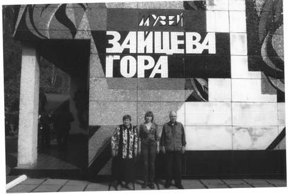
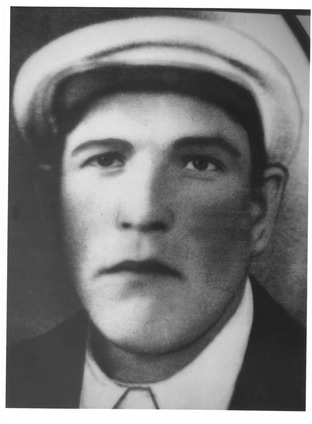
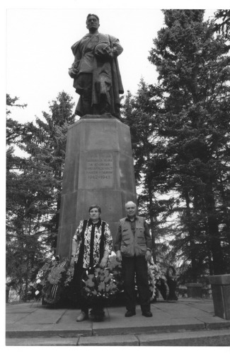

| |
Здесь был передний край.
Здесь шла война.
Вторая мировая.
Пишу - и содрогается перо.
Сто тысяч жизней - счет того сраженья,
Что в сообщеньях Совинформбюро
Звалось боями местного значенья.
Я знаю, что закон войны суров,
И все ж -
Сто тысяч
За один пригорок...
Да как же он не будет сердцу дорог!
А сколько по стране таких холмов,
Где до сих пор полынный ветер горек!
.. .Вновь зеленеет сердцу милый край,
И скоро май опять цветами брызнет.
Шумит весна,
Гудит грачиный грай,
И все живое радуется жизни. |
Воспоминания о поездке на Братскую могилу в д. Зайцева Гора
Я, Иванова (Телятникова) Римма Васильевна, жительница г. Твери, хочу выразить свою благодарность и признательность за предоставленную возможность почтить память отца, Телятникова Василия Николаевича, 1907 года рождения, погибшего в боях за Родину 2 августа 1942 года. Мне по ходатайству руководителя Фонда «Жить и помнить» Терентьева A.M. была оказана материальная помощь Губернатором Тверской области Зелениным Д.В., что позволило мне, моему мужу и дочери съездить в мае 2010 года на Братскую могилу в д. Зайцева Гора Барятинского района Калужской области.
Братская могила в д. Зайцева Гора возникла в 1943 году вследствие, лерезахоронения в нее останков воинов из одиночных и братских могил из района близлежащих деревень и постоянно пополнялась останками погибших воинов.
В ноябре 1959 года на могиле установлен памятник погибшим в боях у Зайцевой
Горы.
Количество погибших под Зайцевой Горой и захороненных здесь очень велико. По разным источникам и свидетельствам погибло от 100 или даже 200 тысяч.
В мае 2010 года администрацией Барятинского района Калужской области в честь 65-летия победы в Великой Отечественной войне был организован многочисленный и замечательный праздник.
На праздник съехались родственники погибших воинов со всех концов нашей необъятной Родины, чтобы отдать дань памяти солдатам, положившим свои молодые жизни на алтарь Победы за светлое будущее своих детей и внуков.
Представители местных органов власти поздравили собравшихся с праздником, выступили участники Великой Отечественной войны с воспоминаниями о тех трагических и великих годах, местный священник православной церкви провел панихиду по павшим в сражениях.
Школьники местной школы показали великолепные концертные номера. Прозвучали песни и музыка военных лет, танцы военной тематики.
После концерта состоялось возложение венков к Памятнику павшим в боях. Многие из приехавших привезли живые цветы, которые и посадили на Братской могиле, установили памятные доски.
Рядом с Памятником и Братской могилой находится и функционирует музей Боевой славы, который является настоящим центром военно-патриотической работы, и не только Калужской области. В музее есть Книга памяти и большое количество экспонатов - свидетелей героизма, доблести и чести наших воинов, сражавшихся за свободу Отчизны.
Работала настоящая солдатская кухня, угощали всех гостей хлебом и солдатской гречневой кашей.
Уезжали мы с праздника с массой впечатлений и с тихой светлой скорбью в душах по ушедшим из жизни солдатам во имя продолжения жизни других.
В заключение хотелось бы привести строки стихотворения калужского поэта Алексея Золотина.
Весной на Зайцевой Горе
Над Зайцевой Горой
Грачиный грай.
Над Зайцевой Горой
Весна играет.
И, кажется, ей - ни конца ни краю.
А ведь был край.
|